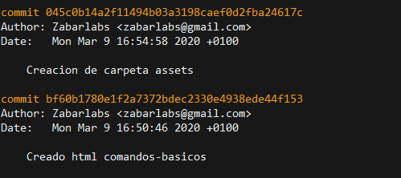
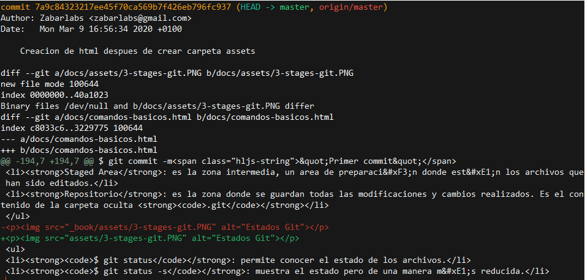
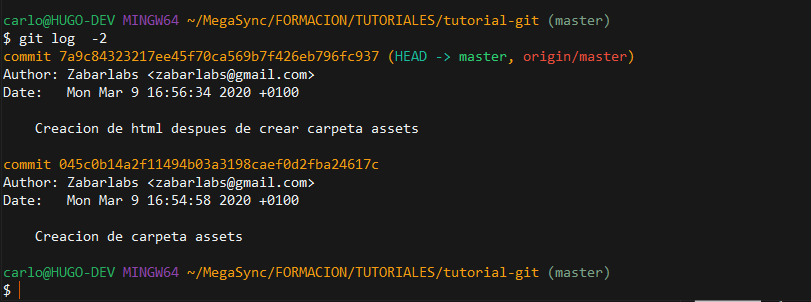
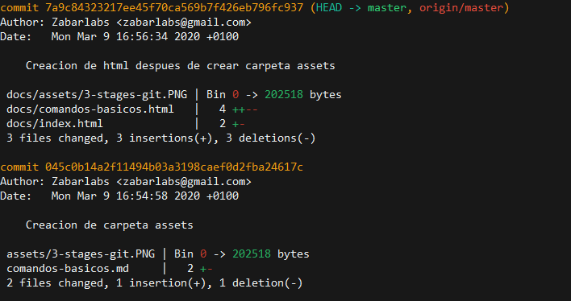
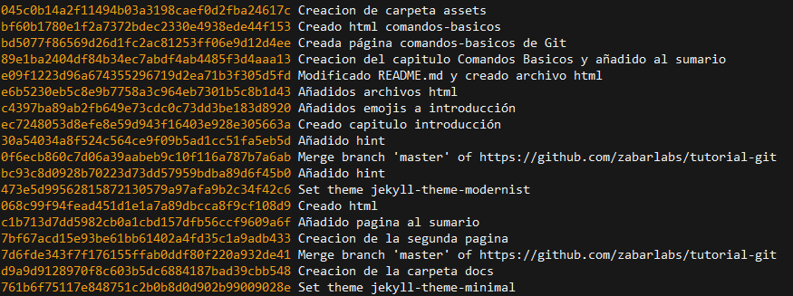
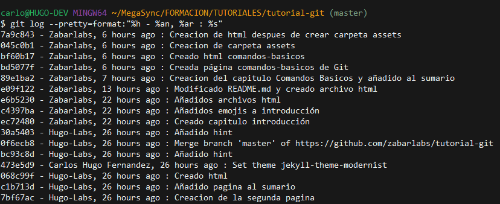
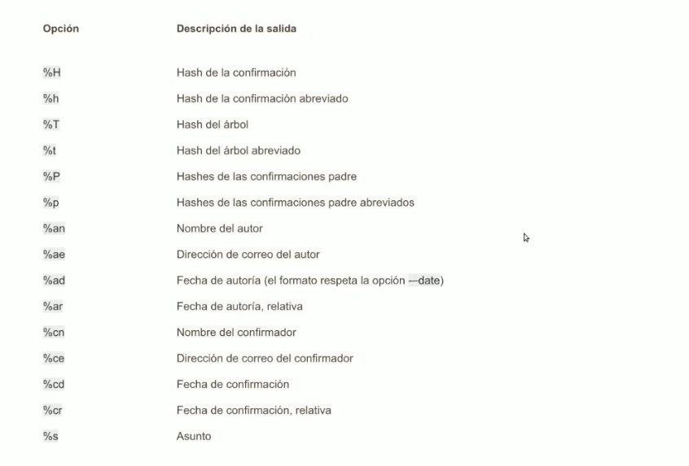
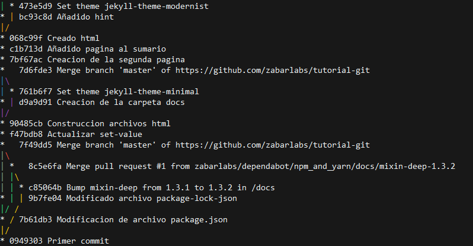

👓 Comprobar el historial de commits
A medida que va creciendo nuestro proyecto tendremos una línea de tiempo, donde cada punto de esa línea es un commit. El verdadero potencial de Git nos permite mirar hacia atrás y poder ver todas las modificaciones que hemos llevado a cabo.
$ git log: nos muestra los commit realizados. Los parametros que nos presenta son el hash largo, autor, fecha y mensaje del commit.

$ git log -p: muestra las diferencias introducidas en cada confirmación

$ git log -2: muestra los dos último commits

$ git log --stat: muestra una estadística de cada archivo y que paso.

$ git log --pretty=oneline:--prettypermite modificar el formato de salida, puede presentar varias opciones, aquíonelinehace que se imprima cada commit en una sola línea.

$ git log --pretty=format:"%h - %an, %ar : %s": esta opción es interesante ya que permite especificar tu propio formato.

Aquí tenemos un cuadro con las diferentes valores que podemos introducir a $ git log --pretty=format:

$ git log --pretty=format:"%h %s" --graph: la opción--graphañade un pequeño gráfico ASCII mostrando el historial de ramificaciones y uniones.

📌 Cuadro Resumen de Git Log
| Opcion | Descripcion |
|---|---|
-p |
Muestra el parche introducido en cada confirmación |
--stat |
Muestra estadísticas sobre los archivos modificados en cada commit |
--shortstat |
Muestra solamente la línea de resumen de la opción --stat |
--name-only |
Muestra la lista de archivos afectados |
--name-status |
Muestra la lista de archivos afectados y su estado |
--abbrev-commit |
Muestra solo los primeros caracteres del hash |
--relative-date |
Muestra la fecha en formato relativo ("hace dos semanas") |
--graph |
Muestra un gráfico ASCII con el historias de ramificaciones y uniones |
--pretty |
Muestra las confirmaciones utilizando un formato alternatico |
Recordar que podemos realizar combinaciones entre las diferentes opciones.